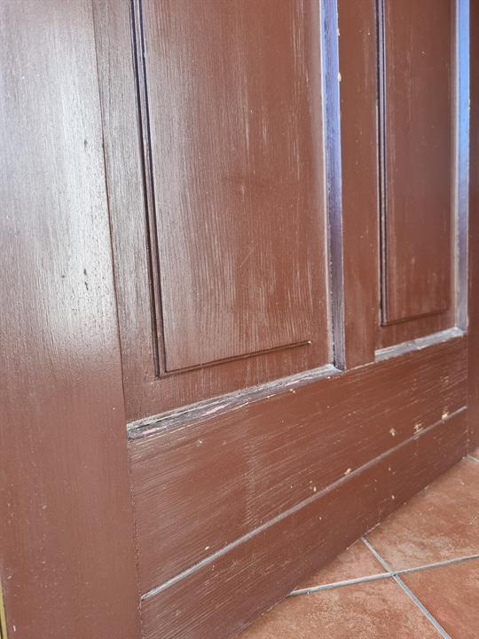
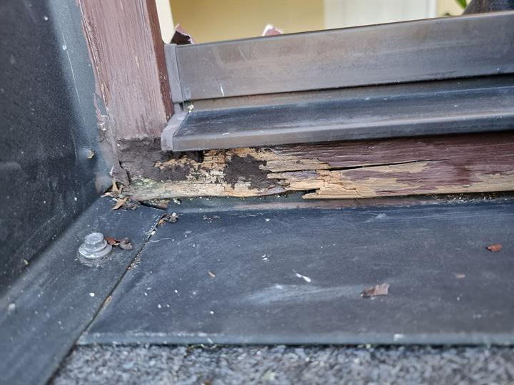
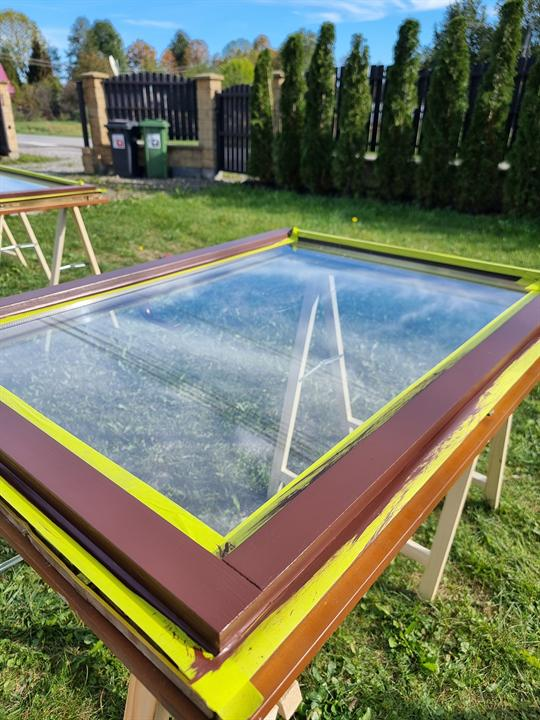

Bielsko-Biała i okolice
Renowacja i ochrona drewna
Odnawiamy drzwi, okna, schody, belki i inne elementy z drewna. Usuwamy zniszczone powłoki, naprawiamy ubytki i zabezpieczamy drewno lakierem, olejem lub lazurą.
- Drzwi i okna drewniane
- Schody i belki
- Lakiery, oleje, lazury
CenaWycena indywidualnazależy od stanu drewna i liczby elementów — wyślij zdjęcia
Kiedy nas wołasz
- Drzwi wejściowe z porysowanym, wyblakłym lub łuszczącym się lakierem.
- Okna drewniane z odchodzącą farbą i zniszczonymi parapetami.
- Schody, poręcze i balustrady, które straciły wygląd po latach użytkowania.
- Belki, podbitki i inne elementy z drewna wymagające zabezpieczenia przed wilgocią i słońcem.
Zakres i sposób wykonania
Ocena stanu drewna
Sprawdzamy, czy zniszczona jest tylko powłoka, czy też samo drewno. Miękkie, zbutwiałe fragmenty usuwamy i uzupełniamy — malowanie na chore drewno niczego nie rozwiązuje.
Usuwanie starych powłok i szlifowanie
Stary lakier i farbę usuwamy mechanicznie lub chemicznie, zależnie od elementu, i szlifujemy drewno papierem o stopniowanej gradacji aż do zdrowej, równej powierzchni.
Naprawa ubytków i pęknięć
Wypełniamy szczeliny, pęknięcia i ubytki masami do drewna dobranymi pod jego odcień, żeby naprawy nie rzucały się w oczy.
Impregnacja
Drewno na zewnątrz zabezpieczamy impregnatem chroniącym przed wilgocią, grzybami i sinizną. To warstwa, od której zależy, jak długo wytrzyma całe wykończenie.
Lakier, olej, lazura lub farba
Na zewnątrz stosujemy powłoki odporne na słońce i deszcz, wewnątrz lakiery i oleje podkreślające usłojenie. Kolor i stopień połysku dobieramy razem z Tobą.
Zabezpieczenie otoczenia
Okucia, szyby, uszczelki i elementy wokół okrywamy przed szlifowaniem i malowaniem, a po pracy sprzątamy.
Jak przebiega realizacja
Zdjęcia i ocena
Wysyłasz zdjęcia elementów — oceniamy stan drewna i proponujemy sposób renowacji.
Zabezpieczenie
Okrywamy okucia, szyby i otoczenie miejsca pracy.
Usuwanie powłok i szlif
Zdejmujemy stare warstwy i szlifujemy do zdrowego drewna.
Naprawy i impregnacja
Uzupełniamy ubytki i zabezpieczamy drewno impregnatem.
Wykończenie i odbiór
Nakładamy warstwy lakieru, oleju lub lazury i podpowiadamy, jak dbać o drewno.
Od czego zależy cena
- Liczba i wielkość elementów — jedne drzwi czy wszystkie okna w domu.
- Stan drewna — ile warstw trzeba zdjąć i ile napraw wykonać.
- Rodzaj wykończenia — lakier, olej, lazura czy farba kryjąca.
- Praca na zewnątrz lub na wysokości — rusztowanie i zależność od pogody.
Wszystkie ceny podajemy netto i z materiałem. Dla mieszkań i domów najczęściej obowiązuje 8% VAT, w pozostałych przypadkach 23%.
Policz orientacyjną cenę w minutęNajczęstsze pytania
Czy opłaca się odnawiać stare drzwi i okna?
Jeśli drewno jest zdrowe — zwykle tak. Renowacja kosztuje ułamek ceny nowej stolarki, a solidne drewniane drzwi i okna po odnowieniu służą kolejne lata. Przykład: drzwi wejściowe w Jaworzu w galerii poniżej.
Lakier czy olej — co wybrać?
Lakier tworzy twardą powłokę, odporną na ścieranie — dobry na drzwi i schody. Olej wnika w drewno, podkreśla usłojenie i łatwo go odświeżyć miejscowo. Na zewnątrz często najlepsza jest lazura. Doradzimy przy wycenie.
Czy renowację drewna robicie przez cały rok?
Elementy wewnątrz — tak. Prace na zewnątrz wykonujemy przy odpowiedniej temperaturze i suchej pogodzie, zwykle od wiosny do jesieni.
Jak często trzeba odświeżać drewno na zewnątrz?
Zależy od nasłonecznienia i rodzaju powłoki — elementy od strony południowej i zachodniej wymagają tego częściej. Po renowacji podpowiemy, kiedy i czym odświeżyć powłokę.
Nasze realizacje

Przed: zniszczone drewniane drzwi 
Po: odnowione drzwi wejściowe w Jaworzu 
Przed: zniszczony, zbutwiały parapet okna drewnianego 
Renowacja okien drewnianych w Jaworzu
Renowacja i ochrona drewna w Bielsku-Białej i okolicach — umów bezpłatną wycenę
Pracujemy w Bielsku-Białej i okolicach — m.in. w Jaworzu, Czechowicach-Dziedzicach, Kozach, Wilkowicach i Szczyrku. Większe zlecenia realizujemy też dalej, np. w Cieszynie.